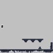
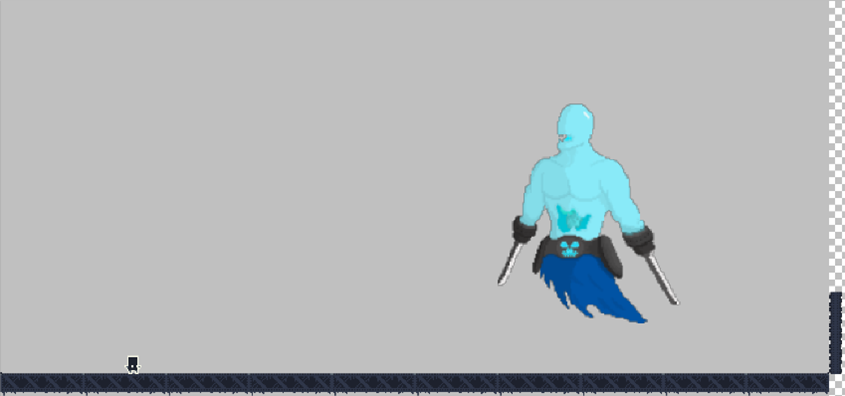
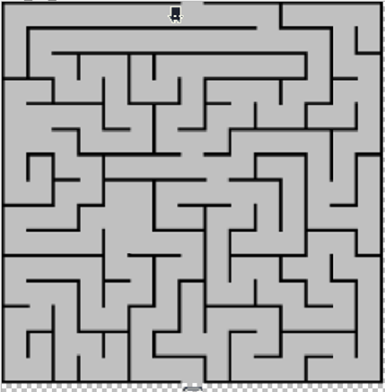

 |
Level 1 - Platform GameThe first level of the game is a platformer where players control Rever, who must navigate through a series of obstacles and defeat enemies to progress. Rever must jump over gaps, dodge obstacles, and use his fencing skills to defeat monsters. |
 |
Level 2 - Boss FightThe second level is a boss fight against Vuelo, the evil entity that has been terrorizing the world of Lacum. The level takes place in a giant arena, where Rever must dodge Vuelo's attacks and strike back with his fencing skills. Vuelo wields dual swords and is a formidable opponent, so players must think outside the box to defeat him. |
 |
Level 3 - MazeThe third level of the game takes place in a maze-like dungeon, where Rever must navigate through a series of corridors to find the exit in limited time. Players must use their problem-solving skills to find the correct path to the exit. |